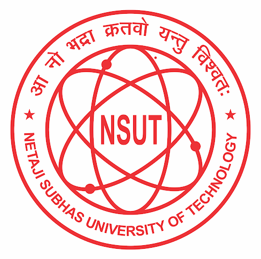
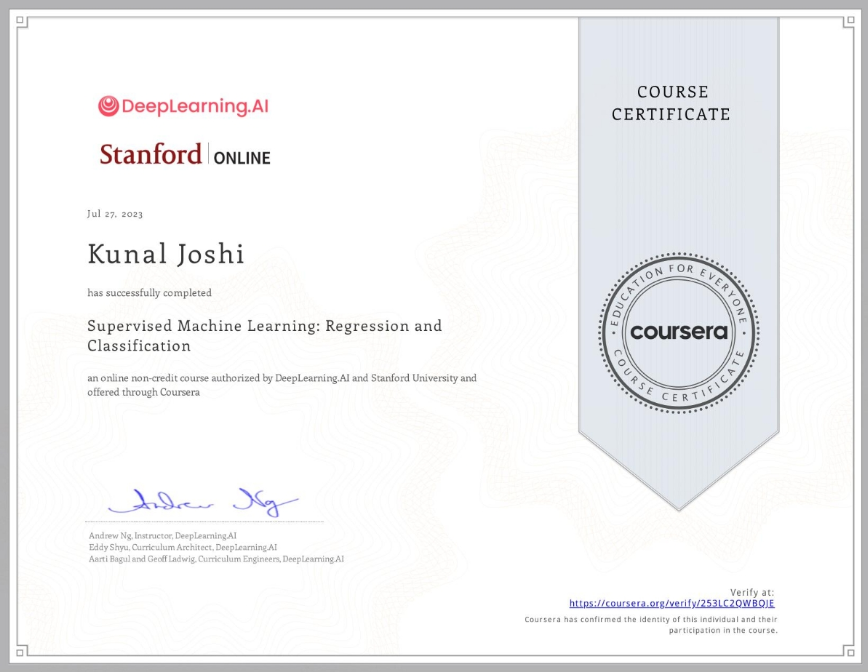

 KUNAL JOSHI
Education
Netaji Subhas University of Technology, Delhi, INDIA
- Graduation expected 2025
- Major in Manufacturing Processes and Automation Engineering
- With minor in Computer Science
- CGPA - 6.55
Rajkiya Pratibha Vikas Vidhyalaya, Surajmal Vihar, Delhi
- 12th Graduated 2020 Percentage-87.4%
- 10th Graduated 2018 Percentage-87.8%
- Curriculum by CBSE Board of India
Work Experience
- Managed Website by coolroms.com
- Aware other for College Debugging Society
- Worked for College Server Maintenance
Skills
- Technologies: DSA in java, html, CSS, JavaScipt
- Frameworks: Bootstrap, React.js
- Softwares: CAD, CAM, MATLAB, Middleware
Ceritfications
- HTML, CSS by Udemy Angela Yu Bootcamp
- Machine Learning by Coursera
